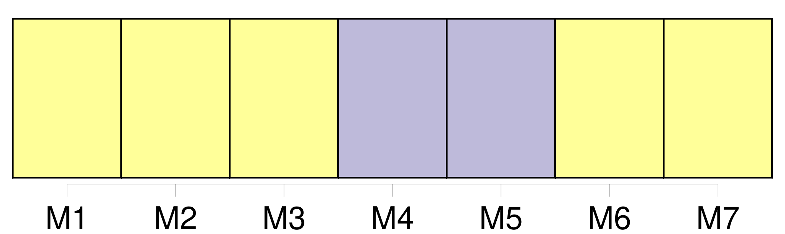
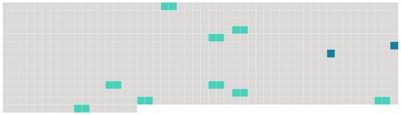

Longueur nb maillons : 11 mentions |
 |
Huitième semaine [3 phrases] L'OTAN a annoncé hier qu'elle allait encore intensifier ses bombardements sur la Yougoslavie malgré le risque de tuer des civils albanais [du Kosovo] qui pourraient être utilisés comme boucliers humains.
Les Occidentaux ont évoqué avec une insistance croissante, sans fournir de preuves concluantes, la possibilité que des « boucliers humains » soient employés par les forces serbes, par exemple à Korisa, le village [du Kosovo] où un bombardement de l'OTAN a fait des dizaines de victimes civiles. [1 phrases]
« Nous savons que les boucliers humains constituent un danger bien réel partout au [Kosovo] », mais « nous avons une grande confiance dans notre processus d'établissement des cibles ».
Boucliers humains : l'interrogation [6 phrases]
Plus d'un millier de personnes fuyant [le Kosovo] sont arrivées en train ce week-end.
Les arrivées de réfugiés [du Kosovo] ont repris ce week-end en Macédoine, où 800 personnes sont entrées hier par le poste-frontière de Blace, au nord de Skopje, et le Haut commissariat aux réfugiés de l'ONU ( HCR ) s'attend à un afflux croissant dans les jours à venir. Quelque 300 Albanais [du Kosovo] étaient arrivés samedi en Macédoine, ce qui représentait le groupe le plus important depuis le 5 mai, date à laquelle ce pays, débordé par l'arrivée de plus de 200. 000 Albanais [du Kosovo] , avait refoulé un millier de réfugiés.
Samedi comme hier, les réfugiés sont arrivés en train de la région d'Urosevac, une ville du sud-est [du Kosovo] située sur la ligne reliant Pristina, le chef-lieu de [la province] , à la frontière macédonienne. |
 |
Il est possible de télécharger la ressource sur la page Ortolang |
Si vous avez des questions ou vous voyez des erreurs, merci d'envoyer un mail à silvia.federzoni89@gmail.com |